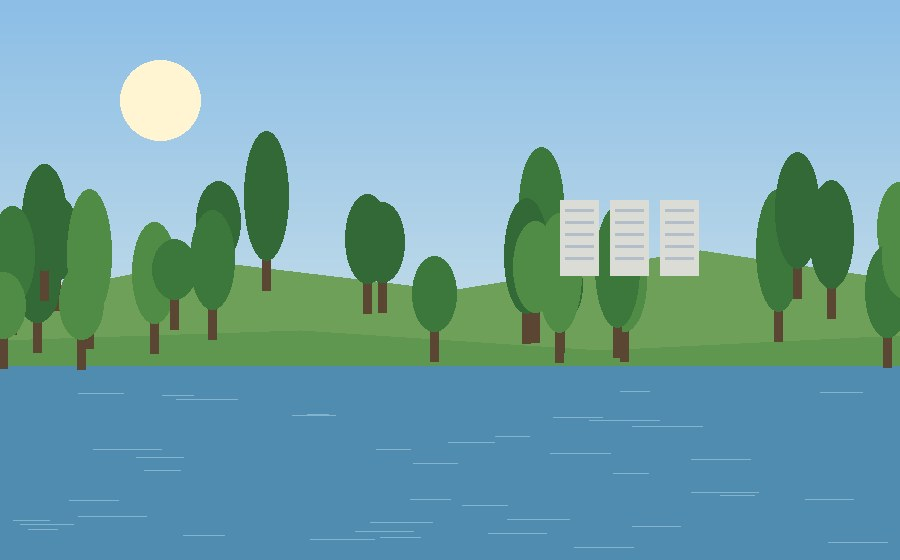

1. Львів, Україна

Місто, в якому я навчаюся. Старі вулички, кав'ярні на кожному кроці і атмосфера, до якої неможливо звикнути до кінця.
Особистий блог про міста, які для мене щось значать
Тут я зібрала три міста, які для мене особливі. Одне з них велике і відоме на весь світ, одне я бачу щодня, а ще одне маленьке, про яке мало хто чув. Але кожне з них запам'яталося мені чимось своїм.
На сторінці кожного міста є короткий опис, кілька цікавих фактів, місця, які варто побачити, і моя особиста оцінка.
Місто, в якому я навчаюся. Старі вулички, кав'ярні на кожному кроці і атмосфера, до якої неможливо звикнути до кінця.

Місто каналів, мостів і велосипедів. Дуже спокійне і водночас живе.

Невелике молоде місто на Хмельниччині. Тихе, зелене і дуже затишне.
| Місто | Країна | Чим запам'ятовується | Моя оцінка |
|---|---|---|---|
| Львів | Україна | Старе місто, кава, архітектура | 10/10 |
| Амстердам | Нідерланди | Канали, мости, музеї | 9/10 |
| Нетішин | Україна | Тиша, природа, річка Горинь | 8/10 |